九条记录的时间与轨迹检查
每源按目录排序选择首、中、末。图像为首中末时刻；轨迹为21点中心在源坐标下的XY/XZ正投影。没有把轨迹投到视频像素，没有据此声称相机标定或轴向已验证。
EgoDemo E001
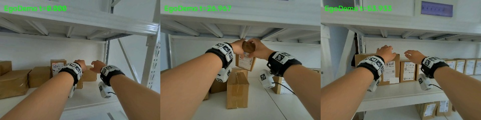
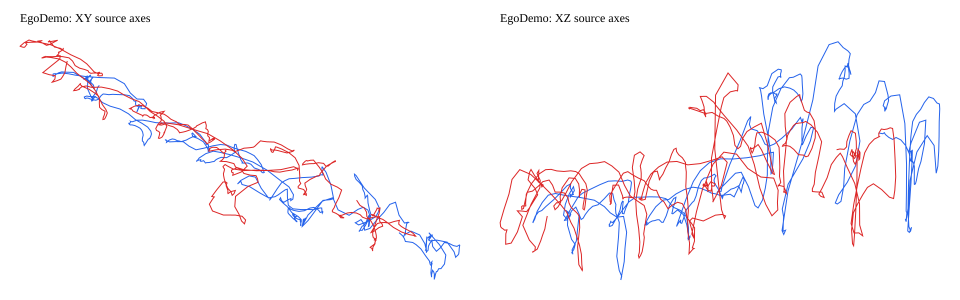
EgoDemo E016
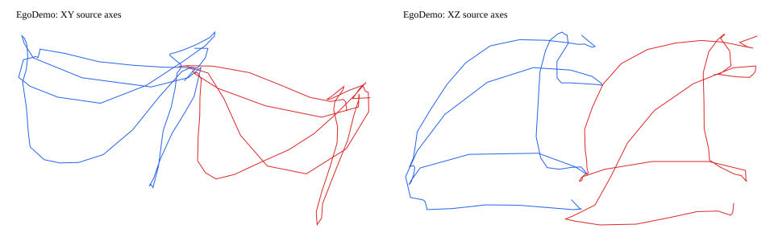
EgoDemo E031
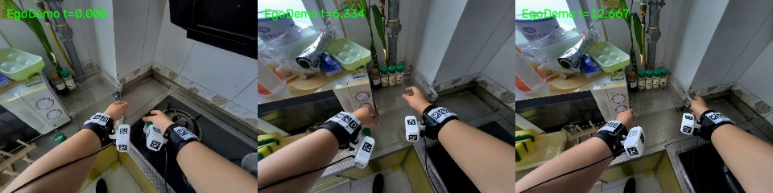
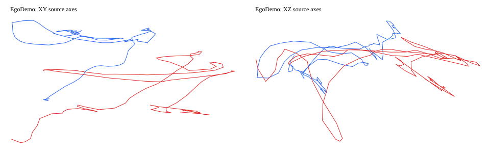
EgoPro 291aff24-8b62-4a5e-b470-85114bdf86dc
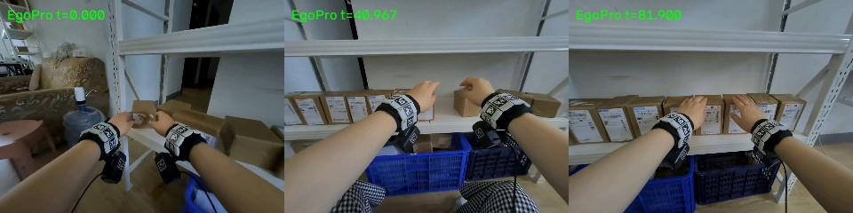
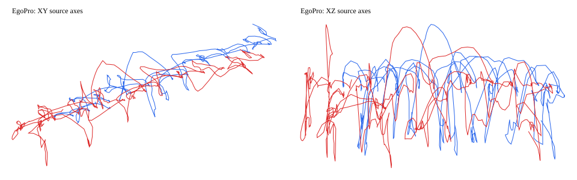
EgoPro a3a85c3e-79cd-4d76-a91c-a7405f4647c9
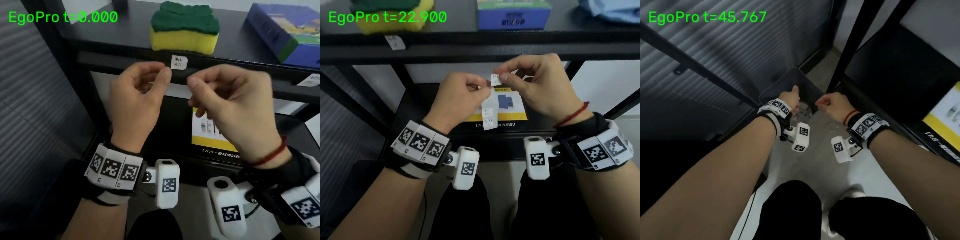
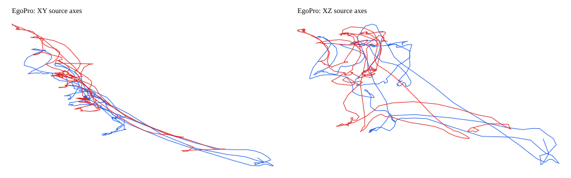
EgoPro fdbb7805-04f7-46c0-ae1e-1b454accd7a8
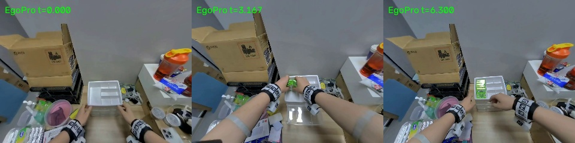
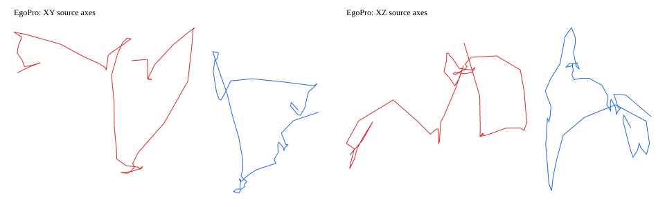
EgoStandard 01e98c50-1164-448f-a7ff-b722d7a1c19b
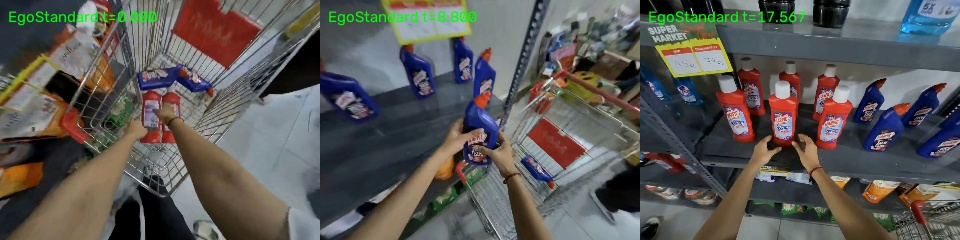
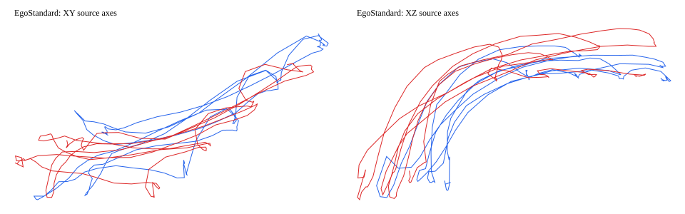
EgoStandard 1f88d4ce-f51e-440e-a072-e6986fae9da4
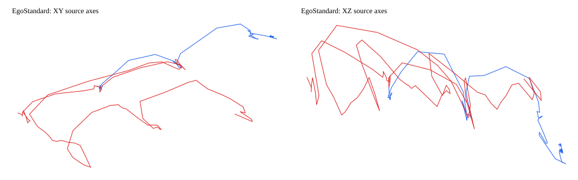
EgoStandard bca969eb-9f5d-4842-b1c8-d60faaf03243
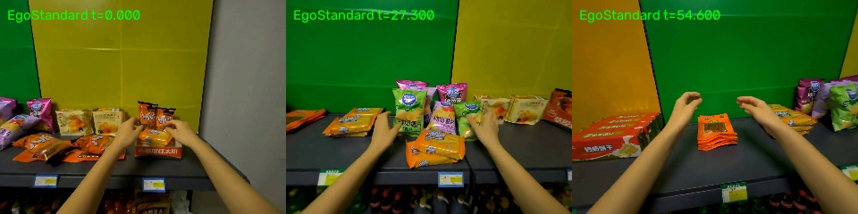
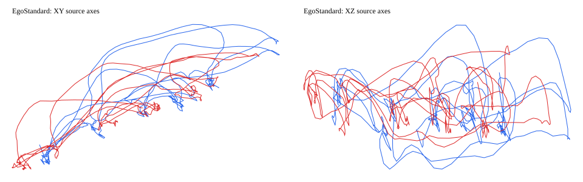